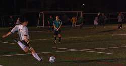
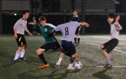
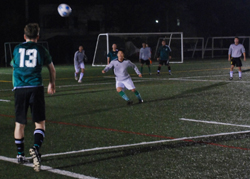

|
YC&AC Sunday 18th October.
Hibs went all the way to YCAC to face Zion, a team that we knew very little about, except for the fact that they have not beaten anyone so far. However, Hibs have learned from past experiences not to underestimate the bottom table teams. It has cost us at least two championships.
The weather was perfect and we had a solid team this time, with a defense that could have easily kept Argentina away from the World cup. Unfortunately, neither Peru or Uruguay had Hitoshi, Jay, Dave, Raffa and Mike McKenna in the back. The game started and it didn't take long for Josh to find Andre who took on two defenders and then put Kuni through on goal to score, a good finish!!! After scoring we believed that it would be an easy game but Zion's keeper saved about four one-on-one shots.
In one these plays, Josh who had a nice game, received a great pass from Keita and with one touch took on two defenders getting himself free on goal before being denied by the keeper. We could have finished our chances better but the keeper also did very well in closing our angles. Before the end of the first half Mike McGirr received the ball on the left side took on three defenders beautifully (what skills!!) and then crossed the ball to Andre who was denied again by their keeper. That was it for the first half, leaving many frustrated Hibs players.
The second half started and Zion took advantage of Hibs frustration and started to enjoy the game. They came forward a few times hitting the crossbar once and creating another two or three opportunities which were all denied by Hitoshi and his mighty defenders. After being cornered by Zion for about 10 minutes,
Hibs started to take control of the game. Mainly, because of our midfielders, Yasu, Keita, James, Josh and Mike Mcggir who dominated the middle winning every header and running like mad men. After 20 minutes or so into the second half, Andre received a beautiful long pass from Jay, got inside the box turned on his marker and since he had no angle for a shot passed to Kuni who had no problem placing it in. The goal seemed to affect Zion, they seemed a bit lost on the pitch, but they kept working very hard. James created a few chances and put a few good crosses but nobody was able to score from any of them. Towards the end of the game, Mike McGirr gave Andre a long pass, the flag wrongly went up but the strong referee let the game continue and again another goal came from the inspired partners, Andre and Kuni, his third of the match. However, it was not over yet, there was still one more to come when Yasu received the ball, dragged two defenders before puting Keita free on goal who scored on one touch, a nice strike, 4-0.
Zion surprised me, they were a difficult team to play against, they worked very hard on and off the ball and if they become more a little bit more organized and effective they can at the very least stay in the first division next year. As for the Hibs, we have a lot of new guys, it wasn't our best game but everybody worked very hard and we were solid. Bring on the rest of the season!!.
Report by Andre Pinto
|